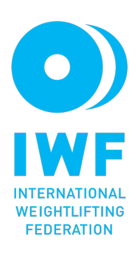

Lü Xiaojun
Bio
Born 27 July 1984 Lu is a Chinese weightlifter, Olympic champion and four time world champion competing in the 77 kg category until 2018 and 81 kg starting in 2018 after the International Weightlifting Federation reorganized the categories
Lü was born in a village administered by Qianjiang City, Hubei Province. His father, Lü Yuan, and the rest of his family were farmers. When he was 13 years old he joined a local sports school to be trained as a weightlifter, which was an opportunity to escape rural poverty. In 1999, to remove the financial burden on Lü's family, his coach Dengling Hu sent him to join the provincial team.
Weightlifting career
Olympics
Heading into the 2012 Summer Olympics Lü was the heavy favorite to win. He ended up winning the gold medal at the 2012 Summer Olympics in the 77 kg class with a total of 379 kg.His snatch of 175 kg set both a world and Olympic record, as did his total of 379 kg, for the 77 kg class.
Due to an error during the snatch phase, Lü was unable to attempt his third lift at 177 kg. He was again the heavy favorite to win gold at the 2016 Summer Olympics.
He finished the snatch phase with a new world record of 177 kg, but did not win gold due to Nijat Rahimov's clean and jerk world record of 214 kg. Lü had the same total, but Nijat Rahimov won due to virtue of a lighter body weight.
World Championships
In 2009 he won his first World Weightlifting Championships where he set new Snatch and Total world records. Looking to repeat in 2010 he ended up being the silver medalist, but returned in 2011 to win gold for the second time.
Lü won 3 gold medals in the 77 kg class at the 2013 World Weightlifting Championships. He broke his own world record in the snatch with a lift of 176 kg. He also completed a 204 kg clean and jerk, setting a new world record total of 380 kg.
At the 2015 World Weightlifting Championships he won the gold medal in the snatch, but was unable to complete a clean and jerk which eliminated him from winning a fourth world championship.
In 2018 the International Weightlifting Federation updated the weight classes, and he competed in the newly created 81 kg division.[8] The 81 kg division saw 5 world records set and 11 junior world records set
